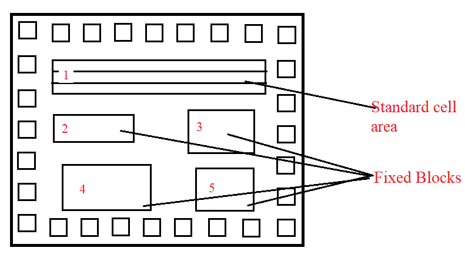

Standard Cell Based Design: In a standard cell-based design approach, the designer uses pre-designed logic cells such as gates (AND, OR, NOR, NAND, etc.), multiplexers, flip flops, etc., and they are commonly known as standard cells. Those pre-designed and tested cells are stored in a library. Different cells with different speed grades, power, and area requirements are also available. The chip designer only defines the placement and interconnections between different cells. By using stand cell, a designer can save time, and risk of failure by using a pre-designed tested, and characterized cell library.
The disadvantage of this type of design approach is the expense of purchasing the cell library. Also, it may take time to interconnect all layers. The average manufacturing lead time is six to eight weeks.
